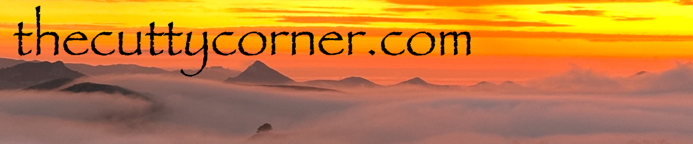
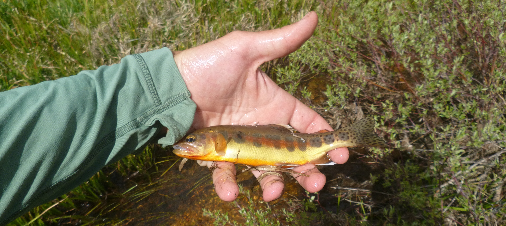

Golden Trout Wilderness Flyfishing

After discussing a summer trip for the last 6 months or so, we settled on chasing some native trout via backpack. After we all finished our work on Thursday, Chad, Jeremy and I piled into Chad's Prius and set off towards the Eastern Sierra. On the way out, while searching for food I stumbled across Tacos Illegal in Bakersfield, which was the best rated Mexican food within 30 miles of us. We pulled up to an auto shop kitchen combo and knew we were in for a treat. The boys gave high praise to the pastor and pollo, and to my surprise the veggie burrito was also incredible. If you ever find yourself near MLK way in Bakersfield, this is the spot to go.


Jeremy kicking back after a solid meal (left) / The promised land (right)
We arrived to the Horseshoe Meadow lot around 9pm, and all hit the hay in prep for Cottonwood Pass the next morning. The clock struck 6, and we were eating and ready to hit the trail. The Horseshoe lot was packed to the gills, and we were a bit worried for the trail traffic to come. At the base of the climb, we ran into Derek and Katie, who were just as stoked as us, and were on a peak bagging trip throughout the zone, and we would continue to run into them throughout the trip. As soon as we got to the top of the Cottonwood saddle, we missed a turn and ended up about a half mile south on the PCT. After some discussion, we decided to move off trail to get towards the target creeks on the valley floor. This ended up being one of the best calls of the trip, and we were treated to about 4 miles of off-trail magic.

Some of the rock formations scattered amongst the hills.
Upon arrival to the first of our wandering streams, we all dropped our bags and hit the water. First cast into a pool, I pulled out a decent 6 inch golden trout, the first of my life. I had previously caught the somewhat contentious little kern golden, but this fish was stunning. After releasing it, I caught a few more and we decided to continue to find camp for the night. We settled on a campsite on a meadow bank and went back out to fish for a few hours. This session was rather fruitful, and I was lucky enough to watch Jeremy catch his first fish on the fly. Some thunderclouds appeared over Whitney, and we retreated to camp to wait out the rain for a bit and chef up some dinner. The mosquitoes were rather awful this evening, so we had to spend the evening conversing between the two tents. The new-moon stars were brilliant when I woke up around 3am, and I was bummed we hadn't been able to enjoy them together for a bit longer.


California's state fish; the Golden Trout (left) / Jeremy's first fish on the fly (right)
The following morning, we all woke up well rested and quickly chowed down on oats to track down some new sections of water further downstream. This morning was by far our most fruitful, and all three of us caught more fish on this stream than we did anywhere else on route combined. Upper Golden Trout Creek and its tributaries had some sizeable fish, and the biggest ones were eating some big flies. After fishing the tail end of the meadow with little to no lulls in bites for 2-3 hours, we decided to push on towards camp for the night.


A nice one I picked out of some willow roots (left) / Primetime Sierran meadow (right)
A gentle descent along some of the lower was unreal and offered some of the most beautiful Sierra stream zones I have seen in my life. We were seeing this zone at peak spring, and the flowers were unreal here. We foolishly decided to continue pushing to camp and skip the fishing, which was a horrible call, and we would soon realize this decision led to us missing the best pools we would see on route.


The aforementioned blown opportunity (left) / A Castilleja lined, trout filled pool (right)
Dropping into the Kern River watershed, the trees got taller, and the stream got fatter. Soon enough we were into little kern golden trout territory, and we were stoked. The lodgepole pines here were some of the biggest I had seen in the southern Sierra, and many of them were growing in all sorts of fun ways.

Big old Sierra Lodgepole Pine Pinus contorta subsp. murrayana
We pivoted upstream and made our way to our temporary camp for the evening. As we moved across the valley, we could hear water in the creeks and decided to investigate. We were met with a dense, mostly impenetrable line of willow along the creek which made finding holes tough. We found a few pools that were holding fish, and just like that we were onto the little kern goldens. The fishing here was a bit sparser, and it was here when we began to kick ourselves for not fishing in the hours before.


Chad lost balance and regained it about 8 times before giving up and taking a break (left) / Jeremy amongst the willows (right)
After fishing for a bit, the weather began to build quickly, and with the spotty fishing and bad bugs at our camp, we decided to pack up and push on to find an airier camp away from water. The hike from the meadow to our next camp was one of my favorite sections for the route, and the small streams and tree cover made for some epic views.

Nice zone
We arrived to a saddle and decided that it would be perfect for camp. After not being able to hang outside the previous night due to bugs, we were stoked to get the footbag out and enjoy some food outside the tent. As the bug situation got worse, we retreated to the tent, and Jeremy and I were lulled to sleep by Chad's reading of Stephen King's Wizard and Glass.
We woke up early to hit the trail and were stoked to come to another stream before the final climb back up into Horseshoe Meadow. The fish here were much tougher to get, but we all scored a few under the morning light. Trail Pass was a lovely hike, and we raced our way up before taking in our final view of Kern Peak and the various meadows we had been through. We descended into Horseshoe Meadow and were stoked to be back at the car and headed back to town. Right before the lot we passed a creek, and Chad convinced us to stop for a few casts. After some persuasion, we got to fish some great pools and all added a few more to the weekend total.


Jeremy on Mars (left) / My final, and favorite fish of the trip (right)
After scoping this zone from the surrounding areas since I was a kid, this trip lived up to everything I had heard. Great fishing, beautiful meadows and incredible early summer botany will make this a place to revisit.